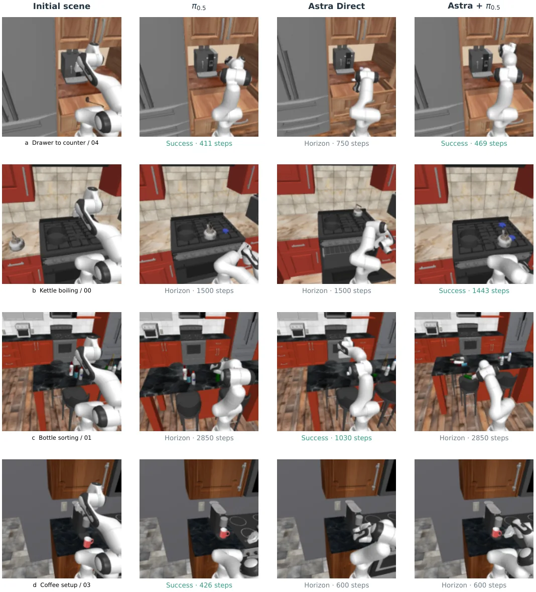
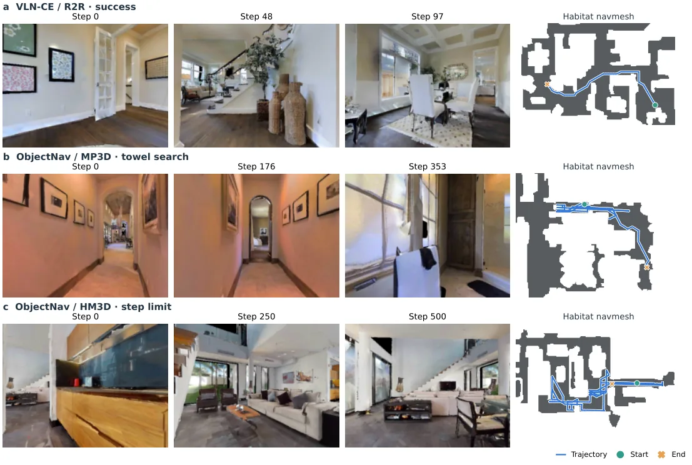

两篇报告：六域系统评测（Galbot Team） + 原生视触觉策略（Tsinghua / Amap）· Direct 与 Hybrid 两种用法 · 六域数字 + token/延迟成本 + 接口形状
| 项 | 六域系统评测 | 原生视触觉策略 |
|---|---|---|
| 标题 | Systematically Exploring the Capabilities of GPT-6 Astra as Embodied Policies | GPT-6 Astra Is a Native Visuo-Tactile Policy for Contact-Rich Manipulation |
| 作者/机构 | Galbot Team（团队署名，33 位作者按姓氏字母序；论文首页只给团队名，未列机构行） | Chen Yang, Linzhe Shi, Hang Zhang, Mu Xu, Jiansheng Fan, Chen Wang（Tsinghua University；Amap, Alibaba Group） |
| 时间 | 2026-09（arXiv v1 提交 2026-09-29 20:54 UTC） | 2026-10-20（arXiv v1：2026-10-19） |
| venue | arXiv preprint / 技术报告（cs.RO，CC BY 4.0）。论文未给正式会议或期刊 | arXiv preprint / 技术报告（cs.RO）。论文未给正式会议或期刊 |
| 链接 | arXiv:2609.38537 · HTML 全文 | arXiv:2610.26846 · HTML 全文 · 代码 TacTalent |
| 证据级别 | L2：全文 + 附录表逐字核对；论文未给 harness 代码链接，无法复核实现 | L3：全文 + 官方仓库可读接口代码（本页 §10 引用了其动作校验函数）；数字未独立复现 |
| 本页未核实项 | 官方 harness 代码（未找到论文给出的代码链接）；RoboDojo 公开分数的“重加权”过程（论文只给结果） | 代码仓库是否为该论文实验的原始快照（仓库自述为 vendored RoboICL）；真机结果（论文全部为仿真） |
分级口径（本 wiki 通用）：L1 只读到摘要/二手转述；L2 读到全文（含附录表、公式）且逐字核对，但无代码可复核；L3 全文 + 官方代码/配置可复核实现细节（≠ 已复现数字）。
| 反直觉结论 | 数字 | 含义 |
|---|---|---|
| Hybrid 不一定更好 | RoboLab：Direct 49/50（98%），Hybrid 46/50（92%） | 策略先验与本任务不匹配时，介入=在错的提案上做修正 |
| 触觉不是万能加分 | OpenViTac：加触觉只从 80.6% 涨到 81.8%（+1.2pp） | 高分辨率视觉已在“偷看”接触线索（论文 §5.3） |
| 决策成本与运动时长脱钩 | 30s 运动 = 250 次调用 × 39.86s ≈ 9965s 模型时间（物理暂停） | “机器人跑了 30 秒”不等于“只花了 30 秒” |
| token 成本主要来自“重复喂上下文” | RoboDojo：cached input 607.6M / 总 624.8M ≈ 97.2% | 省钱的杠杆是减少调用次数与上下文长度，不是缩短 prompt |
| 直接控手最弱 | in-hand 旋转：Astra 0.51% / 4.40%，RL 76.90% / 63.50%（Table 4） | 接触密集 + 需要持续改变接触，仍是专用策略的强项 |
六域报告要回答的是“能力边界 + 资源边界”，不是“又刷了一个 SOTA”。这一动机在 Introduction 前两句写得很直白：
原文：“Community experiments with Astra reveal possibilities ranging from 3D scene understanding and real-to-sim workflows to robot manipulation. These demonstrations motivate a systematic assessment of Astra as an embodied policy: Which tasks can it perform, where does it remain unreliable, and what resources do its decisions require?”
译文：社区实验显示 Astra 的可能性从 3D 场景理解、real-to-sim 流程一直延伸到机器人操作。这些演示促使我们系统评估 Astra 作为具身策略的能力：它能做哪些任务、在哪里仍不可靠、它的决策需要消耗多少资源？
而整篇报告的“发现句”在摘要末段：
原文：“These findings reveal a gap between useful task decisions and reliable physical control. Inference latency further constrains practical control: across 50 RoboDojo instances per condition, policy-assisted and direct control consume 624.8 million and 1.132 billion tokens.”
译文：这些发现揭示出“有用的任务决策”与“可靠的物理控制”之间的鸿沟。推理延迟进一步限制实际控制：在每种条件 50 个 RoboDojo 实例上，策略辅助与直接控制分别消耗 6.248 亿与 11.32 亿 token。
这篇论文最“方法论”的一句话，是把两类时间尺度拆开——这是后面所有成本表的前提：
原文：“Controller frequency and reasoning speed are separate quantities. A fast controller can apply actions while Astra takes much longer to choose the next command. When physics pauses during inference, the robot-motion clock excludes decision latency.”
译文：控制器频率与推理速度是两个不同的量。控制器可以很快地执行动作，而 Astra 选择下一条指令要慢得多。当推理期间物理被暂停时，机器人运动计时会把决策延迟排除在外。
出处：§Introduction 第 1 段；§Abstract 末段；§Evaluation Framework → Measuring Progress and Timing。
原文：“Direct uses Astra-generated robot commands without a learned action policy or whole-body controller. Inverse kinematics and proportional–derivative control can implement these commands. Hybrid adds a learned task policy or whole-body controller.”
译文：Direct 使用 Astra 生成的机器人指令，不依赖任何学习到的动作策略或全身控制器；这些指令可由逆运动学与比例–微分控制实现。Hybrid 则额外引入一个学习到的任务策略或全身控制器。
原文：“Hybrid takes two forms in this report. In manipulation, Astra accepts, modifies, or replaces a task policy's action proposals; RoboCasa also permits subgoal rewriting. In humanoid control, Astra supplies dense motion references, velocity commands, or sparse body targets to frozen whole-body controllers.”
译文：本报告里 Hybrid 有两种形态。在操作任务中，Astra 接受、修改或替换任务策略给出的动作提案，RoboCasa 还允许改写子目标；在人形控制中，Astra 向冻结的全身控制器提供密集运动参考、速度指令或稀疏身体目标。
这句话是整篇论文的“方法论支点”，也是把“任务成功率”解释清楚的关键——动作的物理含义由接口与控制器共同决定：
原文：“An action acquires physical meaning through its interface and controller. A navigation move invokes a discrete motion primitive; a dense motion reference requires compatible body and joint targets; a whole-body controller command invokes learned coordination.”
译文：一个动作通过它的接口与控制器获得物理意义。一次导航移动调用的是离散运动原语；一份密集运动参考需要与之相容的身体与关节目标；一条全身控制器指令调用的则是学习到的协调能力。
而“选择性介入”不是修辞，是被统计过的行为（RoboDojo 50 条轨迹的 42,750 个执行步）：
原文：“In the 50 Hybrid trajectories, 36,576 of 42,750 executed control steps (85.6%) follow π0.5, while 6,174 (14.4%) are generated or corrected by GPT 6 Astra. The model therefore intervenes selectively rather than replacing the learned policy.”
译文：在 50 条 Hybrid 轨迹中，42,750 个执行控制步里有 36,576 步（85.6%）跟随 π0.5，6,174 步（14.4%）由 GPT-6 Astra 生成或修正。因此该模型是选择性介入，而非替代已学习策略。
出处：§Evaluation Framework → How Astra Produces Robot Actions（第 2、3 段）；§Discussion → Capability Depends on the Complete Control Path；§Gripper Manipulation → Results。
这一节的核心不是“Astra 会什么”，而是“每个域把哪一段控制权交给了它”。接口本身在附录里写得非常具体：
原文：“Direct specifies bimanual position, orientation, and gripper targets. Bounded damped least-squares inverse kinematics converts them to joint commands, with 5 cm translation and 0.35 rad rotation safeguards. Segments last one to five 25-Hz control steps.”
译文：Direct 指定双臂的位置、朝向与夹爪目标；带边界约束的阻尼最小二乘逆运动学把它们转换为关节指令，并设有 5cm 平移与 0.35rad 旋转的安全保护；每段持续 1 到 5 个 25Hz 控制步。
原文：“Astra receives one forward-facing 512×384 RGB image, the instruction or object category, a step counter, and action feedback. GPS, compass, depth, semantic labels, goal coordinates, reference routes, and evaluation distances are withheld. … The adapter converts these to 0.25 m forward steps and 30° turns without path planning, under a 500-primitive budget.”
译文：Astra 只接收一张前向 512×384 RGB 图像、指令或物体类别、步数计数器与动作反馈；GPS、罗盘、深度、语义标签、目标坐标、参考路线与评测距离全部被屏蔽……适配器把它转成 0.25m 前进与 30° 转向，不做路径规划，预算是 500 个原语。
| 域 | Astra 的输入 | Astra 的输出（张量/动作形状） | 节奏与预算 | 低层控制 |
|---|---|---|---|---|
| 夹爪操作 RoboDojo / RoboLab | 头 + 双腕 RGB（策略图 640×480，Astra 通常看长边 480 的预览）、14 维本体状态、实测 EEF 位姿、指令、执行历史、进度、步数预算、完成规则 | Direct：双臂位置+朝向+夹爪目标（经 IK 变关节）；Hybrid：接受 π0.5 的 50×14 关节提案前缀 1–15 步，或替换为 1–5 步 EEF 修正 | 25Hz 控制步；Direct 段长 1–5 步 | 阻尼最小二乘 IK（保护 5cm / 0.35rad）+ PD |
| 灵巧操作 Sharpa 手 / DexJoCo | 腕+指目标；DexJoCo 两臂 Franka + Allegro 手，最多 1500 控制步，每段 ≤30 步 @50Hz | Direct：腕位姿 + 手指关节目标；Hybrid：执行策略前缀 1–16 步，或修正 1–5 步（约 30Hz） | ~30Hz；总步数上限 1500 | 仿真关节控制 |
| 移动操作 RoboCasa365 | 3 路 RGB + EEF/底盘/夹爪状态；不给物体位姿、接触真值、参考轨迹、中间奖励 | Direct：有界的臂/夹爪/底盘/躯干指令；Hybrid：接受 20 步前缀、自造动作、或改写策略指令为子目标 | 20 步 @20Hz 一段；任务视界 450–4350 步 | 操作空间控制器（PandaOmron） |
| 导航 R2R / RxR / ObjectNav | 单张 512×384 前置 RGB + 指令/类别 + 步数 + 动作反馈；GPS、罗盘、深度、语义、目标坐标、参考路线全部屏蔽 | 离散移动（0.25m 前进、30° 转向）与 STOP，经适配器转为原语 | 500 个原语预算；无路径规划 | 离散原语执行器 |
| 运动 locomotion | 与 PASSAGE 相同的初始状态、目标、高程观测、局部路线、跟踪器 | 每次调用给 0.5s @50Hz 的密集参考：根高、投影重力、平面速度、偏航率、29 关节位置+速度，共 1625 个一致数值 | 5 次串行尝试（同一赛道） | 冻结 G1 ScaleTrack（50Hz） |
| 人形 loco-manip HumanoidBench / SIMPLE | RGB、privileged state、任务几何、指导文本 | 行走速度 + 偏航率；或骨盆高度 + 腕偏移的稀疏五点参考 | 30 个可执行任务，seed 1/2 | 冻结 Humanoid-GPT / ScaleBFM：50Hz 策略，500Hz 物理与关节 PD |
| 视触觉（第二篇） | 指令 g + 机器人状态 xt + 场景图 It + 左右指触觉图 Tt + 演示块 D + 在线记忆 Mt | 有序动作序列，每步 a = (Δp, Δr, u)：平移增量、旋转增量、夹爪目标（7 维） | 每次响应给若干控制动作；闭环节奏受 API 延迟约束 | 基准适配器 |
出处：Appendix A（Gripper Interfaces / Humanoid Interfaces）；§Gripper Manipulation；§Dexterous Manipulation；§Mobile Manipulation；§Navigation（含 0.25m/30°/500 步）；§Locomotion；§Humanoid Loco-Manipulation；第二篇 §3.1 与 §4 输入条件段。
物理意义：输出不是一条轨迹，而是“位姿增量 + 夹爪闭合目标”；每次决策都用最新观测重新条件化，所以闭环纠错发生在两次 API 调用之间（而不是模型内部）。
原文形式见第二篇 §3.3 的 Eq.(1)；代码映射见 §10 的 validate_actions()（mode 决定 7 维绝对位姿还是 6 维增量）。
物理意义：Hybrid 的动作空间是“策略提案的前缀”与“模型自造的短修正”二选一，二者不可混用——这就是 §5 里 85.6% / 14.4% 那个比例的来源。
出处：§Gripper Manipulation 第 1 段（‘the two branches are mutually exclusive’）；Appendix A Gripper Interfaces。
物理意义：S 是成功指示，d 是最短路径距离，ℓ 是实际行走距离。成功但绕远会掉分——所以 HM3D 上 82% 的成功率只对应 43.69% 的 SPL，这正是论文说“搜索存在大量绕路”的量化依据。
出处：Appendix I.1 的 SPL 定义段（‘average uses all 50 episodes’）。
物理意义：RoboDojo 的 Score 有部分完成分，且 Direct 只有 48 个有效 Score 条目（成功数按全部 50 个实例算）；公开基线被“重加权”到同一任务/场景混合后才可比。
出处：§Gripper Manipulation → RoboDojo Setting 与 Table 2 caption。
原文：“Hybrid succeeds on 24 of 50 instances (48%), compared with 13 of 50 (26%) for Direct. Its mean Score is 62.60, compared with 37.81 for Direct.”
译文：Hybrid 在 50 个实例中成功 24 个（48%），Direct 为 13 个（26%）；Hybrid 的平均 Score 为 62.60，Direct 为 37.81。
原文：“After five rounds of trial and error, Astra still does not achieve reliable locomotion through this dense-reference interface. Later attempts improve stability and produce some forward motion, but body and limb coordination is inconsistent.”
译文：经过五轮试错，Astra 仍然无法通过这个密集参考接口实现可靠的运动；后期尝试提升了稳定性并产生了一些前进，但身体与肢体的协调并不一致。
| 域 | 基准 / 规模 | 主结果 | 来源 |
|---|---|---|---|
| 夹爪操作 | RoboDojo：10 任务 × 5 次/方法；RoboLab：10 任务 × 5 次 | Hybrid 24/50（48%） vs Direct 13/50（26%）；RoboLab Direct 49/50（98%） vs Hybrid 46/50（92%） | Table 2、§3.2 Results；§3.1 RoboLab |
| 灵巧操作 | 10 任务 × 5 例；DexJoCo 10 次经验引导试验 | Score Hybrid 61.6 / π0.5 44.2 / Direct 16.6；DexJoCo 5/10 | Table 3；§3.2 DexJoCo |
| 移动操作 | RoboCasa365：15 任务 × 5 seed = 75 集/条件 | Hybrid 29/75（38.7%）；Direct 25/75（33.3%）；π0.5 17/75（22.7%） | Table 6 |
| 导航 | 4 个子集 × 50 集 | RxR 92%（SPL 77.25）、R2R 78%、MP3D 56%、HM3D 82%（SPL 43.69） | Table 7、Table 8 |
| 运动 | 同一赛道 5 次串行尝试 | 5 次全部未达目标；最好一次（第 5 次）30s 走 3.833m、距目标仍 6.519m | Table 9 |
| 人形 loco-manip | HumanoidBench 30 个可执行任务 | 在 13/30 个任务上超过三个基线的最好值；平均原生回报 581.9（TD-MPC2 338.2 / SAC 42.7 / DreamerV3 −41.9）；6 个任务达原生阈值 | Table 11、Figure 12、§4.1 |
| 视触觉 | UniVTAC 8 + OpenViTac 11 = 19 任务，每设置 210 个场景种子 | 93.8% / 81.8%（纯视觉 76.3% / 80.6%）；比最强已报基线 +22.9 / +13.1pp | 第二篇 Table 1、Table 2、§5.1 |
| 任务 | Final success（Hybrid / Direct） | Score 对比 |
|---|---|---|
| 序列模仿 | — | 53 vs 0 |
| 搭塔 | — | 64 vs 12 |
| 叠衣服 | — | 100 vs 40 |
| 瓶子收纳 | — | 100 vs 36 |
| 按语言分类 | — | 38 vs 60（Direct 更高） |
| 物体分类 | — | 71 vs 100（Direct 更高） |
| 合计 | 24/50（48%） vs 13/50（26%） | 均值 62.60 vs 37.81 |
结论：Hybrid 的优势不是全域的——在纯语言/物体分类上 Direct 更强；重加权后的公开 π0.5 在同一混合上只有 15.67% / Score 24.43。也就是说“Astra 审阅 π0.5”比“π0.5 单干”在同一批场景上高出约 32 个百分点，但这份增益来自“修正目标与接触准备”，不来自模型自己执行全轨迹。
出处：§Gripper Manipulation → Results；Table 2 caption（Direct Score 用 48 个有效条目，success 用全部 50 个实例）。
| 方法 | 成功 | 说明 |
|---|---|---|
| Astra Direct | 49/50（98%） | 10 个任务里 9 个任务 5/5 |
| Astra Hybrid | 46/50（92%） | 比 Direct 少 3 条成功轨迹 |
| π0.5（DROID 权重，零样本） | 18/50（36%） | 无测试任务微调 |
| Cosmos3-Nano-Policy | 18/50（36%） | 零样本 |
| DreamZero | 17/50（34%） | 零样本 |
结论：Hybrid 相对 π0.5 提升 56pp，却低于 Direct。论文自己的解释是——RoboLab 是单臂语义级 pick-and-place，Direct 已经能做对；“给一个对本任务适配很差的提案做修正”会消耗决策预算。
出处：§3.1 RoboLab → Results 与 Discussion（‘a candidate action from a zero-shot policy is not necessarily a useful prior’）。
| 设置 | Astra | 对照 | 指标 |
|---|---|---|---|
| 10 任务平均 Score | Direct 16.6 / Hybrid 61.6 | π0.5 44.2 | 0–100 部分完成分 |
| DexJoCo 双臂叠盘（经验引导 10 次） | 5/10 | 论文只给 Figure 4 的已发表基线，未给数值表 | 原生成功判据 |
| 手内旋转（圆柱，步内达标比例） | 0.51% | 任务专用 RL 76.90% | Table 4 |
| 手内旋转（长方体） | 4.40% | 任务专用 RL 63.50% | Table 4 |
结论：Hybrid 的介入只占 11.98% 的执行步（DexJoCo 为 26.4%），却把平均分从 44.2 抬到 61.6——说明“少量定向修正”比“逐步控制”有效；但一旦要求持续改变手指接触（手内旋转），Astra 就掉到 1% 量级。DexJoCo 的 10 次试验 + 5 次审阅共消耗 63.60M token，其中只有 0.136M 用于审阅。
出处：§3.2 Policy Assistance（Table 3、Figure 3）；§3.2 DexJoCo（63.60M / 0.136M）；§3.2 Stable Grasping, Limited Rotation（Table 4 的 76.90 / 63.50 / 0.51 / 4.40 与 76.90% 对应文本）。
| 任务组（25 集/组） | π0.5 单干 | Astra Direct | Astra Hybrid |
|---|---|---|---|
| Atomic seen | 13/25（52.0%） | 7/25（28.0%） | 13/25（52.0%） |
| Composite seen | 3/25（12.0%） | 4/25（16.0%） | 7/25（28.0%） |
| Composite unseen | 1/25（4.0%） | 14/25（56.0%） | 9/25（36.0%） |
| 全部（75 集） | 17/75（22.7%） | 25/75（33.3%） | 29/75（38.7%） |
结论：Hybrid > Direct 只在策略“见过”的任务上成立；在未见组合上 Direct 更强（56% vs 36%）。配对 McNemar 检验 p=0.5235，即“两种协同方式的差异在统计上并不显著”。执行步里 55.2% 来自被接受的政策动作、44.8% 来自 Astra；66/75 个 episode 改写过指令，改写的指令影响了 72.6% 的提案。
出处：Table 6；§3.3 Uneven Gains（含 McNemar p=0.5235、55.2% / 44.8%、66/75 与 72.6%）；§3.3 Recovery（CoffeeSetupMug 只有 π0.5 成功）。
| 系统（同一 episode 列表，各 50 集） | R2R SR / SPL | RxR SR / SPL | MP3D SR / SPL | HM3D SR / SPL |
|---|---|---|---|---|
| Astra（1 路前视） | 78.00 / 65.27 | 92.00 / 77.25 | 56.00 / 22.43 | 82.00 / 43.69 |
| LightNav-0（1 路） | 58.00 / 54.14 | 72.00 / 64.08 | 20.00 / 8.39 | 66.00 / 37.75 |
结论：成功率是局部比较里最高的，但 ObjectNav 的 SPL 只有 22.43%（MP3D）/ 43.69%（HM3D）——论文把差距直接归因为“绕路”，并指出“认出地标不等于站对位置，也不等于该停”。所有 VLN-CE episode 最终都以 STOP 结束（没有靠耗尽预算收尾）。
出处：Table 7（含 nDTW 72.20 / 84.73、sDTW 59.35 / 80.42）；Table 8（LightNav-0 行）；§5.1 Success and Search Efficiency。
| 尝试 | 结果 | 时间 (s) | 前进量 (m) | 最终误差 (m) | 摔倒 |
|---|---|---|---|---|---|
| PASSAGE（学习生成器） | 到达 | 13.18 | 8.622 | 0.495 | 否 |
| Astra 第 1 次 | 摔倒 | 9.80 | 1.561 | 7.556 | 是 |
| Astra 第 2 次 | 无进展 | 20.28 | −0.024 | 9.141 | 否 |
| Astra 第 3 次 | 无进展 | 8.00 | 0.012 | 9.104 | 否 |
| Astra 第 4 次 | 无进展 | 8.48 | 0.159 | 8.958 | 否 |
| Astra 第 5 次 | 到时间上限 | 30.00 | 2.598 | 6.519 | 否 |
结论：第 5 次靠“文本经验 + 一段重定向行走片段”撑满 30s、走了 3.833m、把目标距离缩短 2.598m，但仍停在 6.519m 外、没进主障碍区。论文的判断是：关节限位不让一份参考“自洽”，根速度、肢体姿态与它们的演化必须描述同一个可行运动；跟踪器能跟踪一份坏参考，于是出现原地踏步、意外接触或摔倒。
出处：Table 9；§5.2 Persistent Locomotion Failures（含 3.833m 与 6.519m）。注：这是同一条适应轨迹的 5 个阶段，不是 5 次独立试验。
| 任务 | DreamerV3 | TD-MPC2 | SAC | Astra | 原生阈值 |
|---|---|---|---|---|---|
| Maze | 272.3 | 244.3 | 144.8 | 1358.8 | 1200 |
| Reach | 7580.9 | 7316.1 | 4565.1 | 11430.2 | 12000 |
| Walk | 800.2 | 782.0 | 31.7 | 848.7 | 700 |
| Run | 633.8 | 93.3 | 5.0 | 642.1 | 700 |
| Crawl | 878.8 | 957.4 | 330.0 | 971.9 | 700 |
| Stair | 131.1 | 70.4 | 14.1 | 272.5 | 700 |
| Push | −1251.9 | −258.7 | −97.9 | 877.3 | 700 |
| Door | 213.0 | 274.7 | 39.4 | 142.4 | 600 |
结论：Astra 只在 Door 一个任务上不是最好的；但 30 个任务里只有 Stand、Walk、Maze、Crawl、Push、Sit Simple 六个达到原生阈值——高回报≠完成任务。另有一条“标定即性能”的证据：只把步态时钟从 1.2Hz 调到 1.8Hz（不改权重、不改指令速度），Walk 的平均回报从 705.72 涨到 746.60；指令 1.25m/s 时实际前进约 1.48m/s。
出处：Table 11；§4.1 Command Selection（581.9 / 338.2 / 42.7 / −41.9；16 / 19 / 25 个任务分别超过单个基线；13 个任务超过三者最好值）；§4.1 Calibration（1.2→1.8Hz、705.72→746.60、1.48m/s）。
| 设置 | 记录到的资源消耗 | 口径 |
|---|---|---|
| RoboDojo（每条件 50 个任务实例） | Hybrid / Direct 总 token 624.8M / 1132.3M；其中缓存输入 607.6M / 1107.3M，未缓存输入 15.90M / 22.91M，输出 1.31M / 2.09M | 不含更早的尝试；缓存输入占绝大部分 |
| RoboCasa（每条件 75 集） | Direct / Hybrid 记录到 7,910 / 8,941 次模型请求；每集中位 85 / 108 次 | 含恢复历史，不等于全部推理调用 |
| 密集运动（最后一次） | 30s 仿真运动用了 250 次同步调用，平均单次 39.86s | 推理期间物理暂停；PASSAGE 规划约 0.08s/次 |
| DexJoCo（10 次试验） | 63.60M token，其中审阅只占 0.136M | 大部分消耗在在线控制上下文 |
| 视触觉（两阶段合计） | 335.97M token，¥7,505.05；V 129.5M / ¥3,102.25，V+T 206.4M / ¥4,402.80 | V+T 比 V 多约 59% token、多 42% 成本；缓存输入 >80% |
结论：Hybrid 在 RoboDojo 上把 token 总量压低 44.8%，但 RoboCasa 上 Hybrid 反而记录到更多请求——“把运动委托出去”不等于“把审阅工作也委托出去”。而 39.86s × 250 = 9965s 的模型时间对上 30s 的物理时间，是本篇最硬的一条部署约束。
出处：Table 13；§9.4 Resource Costs and Capability Limits（44.8%）；§3.2 DexJoCo（63.60M / 0.136M）；第二篇 §7 与 Table 3。
原文：“Tactile RGB images enter through its existing visual interface, enabling few-shot closed-loop control on nineteen simulated UniVTAC and OpenViTac tasks with 210 sampled scene seeds per setting. With visuo-tactile input, Astra achieves mean success rates of 93.8% and 81.8%, exceeding the strongest reported specialist baselines in our comparison by 22.9 and 13.1 percentage points, respectively.”
译文：触觉 RGB 图像通过它既有的视觉接口输入，从而在 19 个仿真任务（UniVTAC 与 OpenViTac）上、每个设置 210 个采样场景种子上实现少样本闭环控制。带视触觉输入时，Astra 的平均成功率分别为 93.8% 与 81.8%，比我们对比中最强的已报专用基线分别高出 22.9 与 13.1 个百分点。
方法上一句话就能说完，但这句话是整篇的关键：不训练新策略、不改模型，只把触觉当图像。它用 RoboICL 式的“演示块 + 在线记忆”做上下文，动作是 (Δp, Δr, u)。论文自陈的贡献是“据我们所知，首个 Astra 直接解读视触觉图像并用于操作的演示”。
| 基准 | Astra V+T | Astra 纯视觉 V | 最强已报专用基线 | 差值（V+T − 基线） |
|---|---|---|---|---|
| UniVTAC（8 任务，每任务 10 seed） | 93.8% | 76.3% | SimpleTouch 70.9% | +22.9pp |
| OpenViTac（11 任务） | 81.8% | 80.6% | OpenVTLA 68.7% | +13.1pp |
| 对比 FTP-1 | — | — | — | +30.9pp（UniVTAC）/ +20.6pp（OpenViTac） |
| 逐任务（加触觉带来的变化） | V → V+T |
|---|---|
| Pull-out Key | 30% → 90% |
| Lift Can | 80% → 100% |
| Insert Hole | 60% → 100% |
| Insert HDMI | 50% → 80% |
| Hardness Classify（OpenViTac） | 70% → 90% |
| Insert Block v1（OpenViTac） | 40% → 70% |
结论有三层，第三层最有价值：① 触觉让“受约束拔取/插孔”这类任务大幅提升；② 19 个任务里 6 个变好、9 个不变、4 个变差（如 Weight Classify 的三对 V 成功、V+T 失败——纯视觉靠“看见滑移”反而判对）；③ 触觉的边际收益高度依赖相机配置：UniVTAC 只有 6/8 任务给固定相机，增益 17.5pp；OpenViTac 每任务都有固定+腕相机，增益只有 1.2pp。这直接给出“什么时候别加触觉”的判据。
出处：摘要；§5.1；§5.2（逐任务变化）；§5.3 Visual Compensation（17.5 / 1.2pp、V 赢 V+T 的三对 Weight Classify）；§7（延迟中位 15.4s / 14.0s，P90 46.3s / 44.0s，P99 110.7s / 96.6s，请求数 3,927 / 4,890）；§8 Limitations（全部仿真、每设置 10 集 → 单次结果即移动 10pp）。
六域报告没有公开 harness 代码；视触觉那篇的仓库里有可读的动作校验实现。下面第一部分是逐字对照过的真实代码（TacTalent 仓库 vendored 的 RoboICL 策略），第二部分是“按论文 §3.1 + 附录 A 复原的控制循环伪代码”，并在每行标注物理意义与出处。
| 变量 / 字段 | 形状 / 类型 | 物理意义 | 出处 |
|---|---|---|---|
mode | 字符串：ee / ee_delta / joint | 决定这一段的动作是绝对末端位姿、末端增量、还是关节角；混用会报错 | astra_policy.py L66-69 |
left / right | ee：7 维；ee_delta：6 维；joint：6 维 | 7 维 = xyz + 四元数(w,x,y,z)；6 维增量 = Δxyz + 旋转向量；6 维关节 = 单臂 6 DoF | L69、L74-75、L94 |
left_gripper / right_gripper | 标量，闭区间 [0,1] | 夹爪闭合比例（0 张开，1 闭合），最终打包进 ee_joint_state | L73-77、L96 |
actions | list，长度 1..32 | 一次响应给 1–32 个控制步；超出即拒（max_chunk=32） | L61-62 |
left_ee_pose / right_ee_pose | 7 维 | 当前末端位姿，ee_delta 的相对基准；缺失就无法增量控制 | L64、L79-85 |
mode 为 joint 时的输出键 | left_arm_joint_state 等 | 关节空间目标，直接喂给 PD/位置控制 | L94-96 |
| 观测四元数校验 | 范数 ±5% 内归一 | 防止“姿态不单位”导致旋转增量被放大成错误动作 | L87-91 |
# 出处：TacTalent 仓库 src/tactalent/_vendor/RoboICL/roboicl/policy/astra_policy.py，函数 validate_actions
# 签名原文为 validate_actions(raw, max_chunk=32, state=…)：state 是已观测 EEF 位姿的打包字典
def validate_actions(raw, max_chunk, state):
if not (1 <= len(raw) <= max_chunk): # 一次响应最多 32 个控制步：太多步=长开环，误差会累积
raise ValueError(...)
ee_targets = {side: state[side + "_ee_pose"] for side in ("left", "right")} # 增量控制的锚点
for item in raw:
mode = item["mode"] # ee / ee_delta / joint：动作的“物理语义”由这里决定
size = 7 if mode == "ee" else 6
for side in ("left", "right"):
values = np.asarray(item[side], dtype=np.float32) # 形状必须恰为 (7,) 或 (6,)
grip = item[side + "_gripper"] # 夹爪目标，[0,1] 的连续量而非二值
if values.shape != (size,):
raise ValueError(...) # 维度不对=语义不对，直接拒
if mode == "ee_delta":
previous = ee_targets[side] # 上一条的目标位姿 = 本次增量的基准
angle = np.linalg.norm(values[3:]) # 旋转向量模长 = 本次转多少弧度
dq = np.r_[np.cos(angle/2), values[3:] * (np.sin(angle/2)/angle)] # 旋转向量 → 增量四元数
values = np.r_[previous[:3] + values[:3], _quat_mul(dq, previous[3:])]
# ^ 平移直接相加；旋转用左乘（世界系增量），所以顺序不能反
if mode in ("ee", "ee_delta"):
norm = np.linalg.norm(values[3:]) # 四元数必须单位化（容差 5%）
values[3:] /= norm
ee_targets[side] = values # 更新锚点：下一条增量基于这条
key = side + ("_arm_joint_state" if mode == "joint" else "_ee_pose")
packed[key] = values
packed[side + "_ee_joint_state"] = np.asarray([grip]) # 夹爪单维，作为“开合”指令下发读法：这段代码说明 Astra 的 Direct 接口在工程上是“带硬校验的 JSON 动作协议”——模式互斥、维度精确、四元数单位化、夹爪归一化。论文里“接口会检查指令边界”这句话，对应的就是这一层。
# 本页按 §Gripper Manipulation 第 1 段 + Appendix A 复原，非官方实现；每行给出物理意义与出处
obs = {img, wrist_l, wrist_r, prop14, ee_pose, instruction, history, budget} # Appx A：640×480 策略图，Astra 通常看长边 480 预览
if mode == "direct":
cmd = astra.call(build_prompt(obs), tools=["calc", "inspect_img", "notes"]) # §2.1：允许工具，但不给隐藏状态/回滚
act = parse(cmd) # 双臂 EEF 目标 + 夹爪；形状 2×(pos 3 + ori 3~4) + 2×[0,1]
q = IK(act, safeguard=(0.05 m, 0.35 rad)) # Appx A：阻尼最小二乘 IK，超限即截断
robot.step(q, n=1..5) # 每段 1–5 个 25Hz 控制步；段太长=开环误差累积
else: # hybrid
prop = pi05.propose(obs) # π0.5 给 50×14 关节提案（任务的接触先验在这里）
resp = astra.call(review_prompt(prop, obs)) # 让模型“接受/修改/替换”，两分支互斥
if resp.accepts: robot.step(prop[: 1..15]) # 只执行前缀：把运动交给策略，把目标交给模型
else: robot.step(IK(parse(resp)), 1..5) # 短修正：改目标/预接触，不改整条轨迹
obs = robot.observe() # 反馈闭环：新观测进入下一次调用（物理在此期间可能暂停）为什么这么写：论文强调“动作的物理意义由接口+控制器决定”，所以伪代码里必须显式出现 IK 保护量（5cm / 0.35rad）、段长（1–5 / 1–15 步）、控制频率（25Hz）——这三者一起决定了 Astra 的一次决策能影响多长的物理时间。
A：因为“介入的价值 = 提案的质量 − 修正的成本”。RoboDojo 的 π0.5 是任务微调过的（50×14 提案有接触先验），而 RoboLab 的 π0.5 是 DROID 零样本权重——它在 RoboLab 上只有 36% 成功率。所以 Hybrid 在 RoboLab 里大部分决策花在“修正一个本来就不适配的提案”，而 Direct 直接从观测规划就能到 98%。反例数值：Hybrid 相对 π0.5 提升 56pp（36%→92%），但相对 Direct 掉 6pp（98%→92%）——两个比较方向给出的结论相反，这正是论文强调“必须说明对比条件”的原因。
A：三个约束叠在一起。① 信息量：每次调用要输出 0.5s × 50Hz × 65 维 = 1625 个必须互相一致的数（根高、投影重力、平面速度、偏航率、29 关节位置+速度）；单个关节差 5° 就足以让跟踪器摔倒或原地踏步。② 频率错配：决策 39.86s/次，而跟踪器 50Hz——一次决策覆盖的运动早已被物理“走完”。③ 反馈粒度：前 4 次只在“摔倒/无进展”级别得到反馈（第 2–4 次前进量 −0.024 / 0.012 / 0.159m），这种反馈无法定位到“哪个关节的相位错了”。反例对照：PASSAGE 用学习到的生成器，同样接口、同样跟踪器，13.18s 到达、误差 0.495m。
A：缓存输入 607.6M、未缓存输入 15.90M、输出 1.31M。也就是说钱的 97% 花在“重复把同一段上下文再喂一遍”。推论：优化顺序应是 ① 减少调用次数（把段长从 1–5 步拉到上限、或让策略多跑几步）② 压缩上下文（图像预览长边已默认压到 480，可再降；裁掉旧历史）③ 最后才是缩短系统提示。交叉验证：Hybrid 把总量降了 44.8%，但 RoboCasa 上 Hybrid 的请求数反而更多（8,941 vs 7,910）——说明“省 token”靠的是每次请求更小/更少，而不是“让策略多干活”。
A：部分是，部分不是。反例一：纯视觉就有 76.3%，已经高于最强的专用基线 SimpleTouch 70.9%——说明“通用模型的细粒度视觉”本身就能替代一部分触觉判断。反例二：OpenViTac 上触觉只带来 +1.2pp（80.6→81.8），因为该基准每个任务都有固定+腕双相机；UniVTAC 6/8 任务只有固定相机，触觉才带来 +17.5pp。反例三：19 个任务里 4 个变差，Weight Classify 的三对配对里纯视觉靠“看见滑移”判对、触觉反而把弱剪切误读成轻物体。所以正确说法是：触觉在“视觉被遮挡/分辨率不足”的接触密集任务上收益最大，在视觉已经够用的任务上可能有害。
A：只有在“每次决策覆盖足够长的物理动作”时才勉强可行，而且必须把这段物理时间算进去。算一算：夹爪操作 25Hz、Direct 一段 1–5 步 → 一次决策只买 0.04–0.2s 的物理动作，而决策要 15.4s，放大 77–385 倍；RoboCasa 20 步 @20Hz = 1s 物理，放大 15 倍；locomotion 250 次调用覆盖 30s，即平均 0.12s 物理/次，放大 332 倍。结论：延迟不是“可以忍的工程问题”，而是决定哪些任务形态可做的结构性约束——这正是论文把 token/延迟单列一张表（Table 13）而不是塞进附录的原因。
原文：“Astra shows strengths in navigation and task-oriented manipulation, correcting targets and contact conditions while cooperating with learned policies; pretrained whole-body controllers also support humanoid loco-manipulation. However, direct in-hand control and dense-reference locomotion remain unreliable, and policy assistance can fail on tasks that the standalone policy solves. These findings expose a gap between generating useful action decisions and reliably producing and verifying their physical effects.”
译文：Astra 在导航与任务导向的操作上表现强，能在与学习策略协作时纠正目标与接触条件；预训练全身控制器也支撑了人形 loco-manipulation。但直接手内控制与密集参考运动仍不可靠，而且策略辅助会在单干策略本就能解决的任务上失败。这些发现揭示出“产生有用的动作决策”与“可靠地产生并验证其物理效果”之间的鸿沟。
原文：“These findings challenge the view that tactile manipulation is intrinsically reserved for specialist policies.”（第二篇结论）
译文：这些发现挑战了“触觉操作天然属于专用策略”的观点。
| 环节 | 内容 |
|---|---|
| Problem | 通用大模型开始能输出数值动作后，“任务成功率”不再能说明它到底承担了哪些控制责任、哪些能力其实来自接口与控制器、反馈如何把这些串起来。需要一个跨六域、同时记录成功与失败的评测，并单独计量 token 与延迟。 |
| Method | 把用法拆成 Direct（Astra 出命令 + 解析式控制）与 Hybrid（Astra 审阅/改写学习策略的提案，或给冻结 WBC 提供参考）；固定模型权重，只允许研究者改提示/接口/WBC 设置，并把“固定配置评测”与“开发试验”分开报告。视触觉那篇进一步把触觉 RGB 直接塞进视觉接口，用演示块+在线记忆做少样本闭环。 |
| Experiment | 六域：RoboDojo 48%（vs Direct 26%）、RoboLab 98%/92%、灵巧 61.6 分 / DexJoCo 5/10、RoboCasa 38.7%、导航 RxR 92% / HM3D 82%（SPL 43.69）、locomotion 0/5、HumanoidBench 13/30 超基线（6 个达阈值）。成本：RoboDojo 624.8M/1132.3M token、locomotion 250×39.86s。视触觉：93.8%/81.8%（纯视觉 76.3%/80.6%），335.97M token / ¥7,505。 |
| Takeaway | ① Astra 是可靠的“任务级决策器”，不是可靠的“物理控制器”；② 增益来自“在正确的地方做少量修正”（14.4% / 11.98% / 26.4% 的步数），而不是替代策略；③ 协同是否值得，取决于策略先验与任务是否匹配（RoboDojo 涨、RoboLab 掉、RoboCasa 只在 seen 上涨）；④ 触觉可以走视觉接口，但收益由相机配置决定；⑤ 延迟与 token 是结构约束，做系统设计时应当作一等公民。 |


参考：arXiv:2609.38537 ｜ arXiv:2610.26846 ｜ 代码 TacTalent ｜ 返回 wiki 索引 ｜ S2→S1→S0 指南